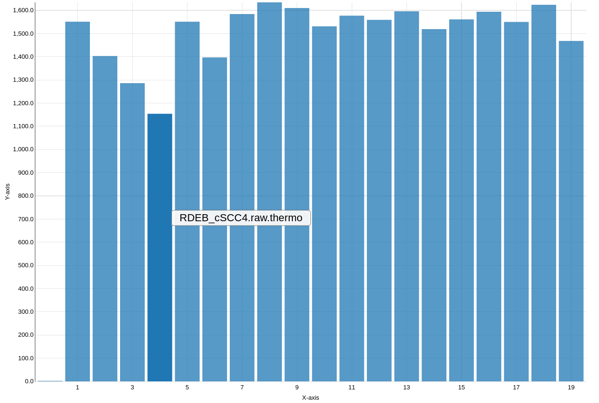

Modern mass spectrometry-based proteomics enables the identification and quantification of thousands of proteins. Therefore, quantitative mass spectrometry represents an indispensable technology for biological and clinical research. Statistical analyses are required for the unbiased answering of scientific questions and to uncover all important information in the proteomic data. Classical statistical approaches and methods from other omics technologies are not ideal because they do not take into account the speciality of mass spectrometry data that include several thousands of proteins but often only a few dozens of samples (referred to as ‘curse of dimensionality’) and stochastic data properties that reflect sample preparation and spectral acquisition (Choi 2014).
In this training we will cover the full analysis workflow from label-free, data dependent acquisition (DDA) raw data to statistical results. We’ll use two popular quantitative proteomics software: MaxQuant and MSstats. MaxQuant allows protein identification and quantification for many different kinds of proteomics data (Cox and Mann 2008). In case you have no previous experience with MaxQuant, we recommend to go through the MaxQuant beginners tutorial before. MSstats provides statistical functionalities to find differentially abundant peptides or proteins from data dependent acquisition (DDA), data independent acquisition (DIA) or single reaction monitoring (SRM) proteomic experiments.
The training dataset consists of a skin cancer cohort of 19 patients, which is a subset of a published study. One fifth of all non melanoma skin cancers are cutaneous squamous cell carcinomas (cSCC) that mainly derive from exposure to ultraviolet light. Most cSCC have a good prognosis but the few metastasizing cSCC have dramatically increased mortality. Here, we compare these metastasizing cSCC to cSCC in patients with the genetic disease recessive dystrophic epidermolysis bullosa (RDEB). RDEB is a genetic skin blistering and extracellular matrix disease caused by collagen VII deficiency. To investigate molecular differences between these two aggressive cSCCs with different origin, we used global proteomic analysis of formalin-fixed paraffin-embedded human cSCC tissues.
The annotation file, group comparison file and FASTA file for this training is deposited at Zenodo. It is of course possible to use another FASTA file with human proteome sequences, but to ensure that the results are compatible we recommend to use the provided FASTA file. MaxQuant not only adds known contaminants to the FASTA file, but also generates the “decoy” hits for false discovery rate estimation itself, therefore the FASTA file is not allowed to have decoy entries. To learn more about FASTA files, have a look at Protein FASTA Database Handling tutorial. The raw data is available via the PRIDE repository. As this is a real life study, the raw data sizes are large and computation time in MaxQuant is long. To save time and storage capacity, you can skip downloading the raw data and the MaxQuant run and instead continue with the MaxQuant outputs which we provide later on. In this case skip the data upload steps 5-8 which are only necessary for the MaxQuant run.
hands_on Hands-on: Data upload
Create a new history for this tutorial and give it a meaningful name
Tip: Creating a new history
Click the new-history icon at the top of the history panel.
If the new-history is missing:
Click on the galaxy-gear icon (History options) on the top of the history panel
Select the option Create New from the menu
Import the FASTA database, annotation file and comparison matrix from Zenodo
Open the Galaxy Upload Manager (galaxy-upload on the top-right of the tool panel)
Select Paste/Fetch Data
Paste the link into the text field
Press Start
Close the window
By default, Galaxy uses the URL as the name, so rename the files with a more useful name.
Once the files are green, rename the fasta file into ‘protein database’, the annotation file into ‘annotation file’ and the comparison matrix file into ‘comparison matrix’.
Tip: Renaming a dataset
Click on the galaxy-pencilpencil icon for the dataset to edit its attributes
In the central panel, change the Name field
Click the Save button
Steps 4 to 7 can be skipped to save time and storage capacity by not running MaxQuant. To run MaxQuant, import the raw data from PRIDE.
Rename the raw datasets into ‘metast_cSCC1.raw’, ‘metast_cSCC2.raw’, etc.. The naming for the raw files have to be exactly this way to later match the file names provided in the MSstats annotation file.
<blockquote class="tip"> <h3 data-toc-skip id="-tip-renaming-a-dataset"> Tip: Renaming a dataset</h3> <ul> <li>Click on the galaxy-pencilpencil icon for the dataset to edit its attributes</li> <li>In the central panel, change the Name field</li> <li>Click the Save button</li></ul></blockquote>
Control that the data type of the raw files is ‘thermo.raw’ otherwise change the datatype into ‘thermo.raw’
Tip: Changing the datatype
Click on the galaxy-pencilpencil icon for the dataset to edit its attributes
In the central panel, click on the galaxy-chart-select-dataDatatypes tab on the top
Select thermo.raw
Click the Save button
Generate a collection for all raw files and name it ‘raw_files’, hide the individual raw files
Tip: Creating a dataset collection
Click on Operations on multiple datasets (check box icon) at the top of the history panel
Check all the datasets in your history you would like to include
Click For all selected.. and choose Build dataset list
Enter a name for your collection
Click Create List to build your collection
Click on the checkmark icon at the top of your history again
MaxQuant analysis
The run time of MaxQuanttool depends on the number and size of the input files and on the chosen parameters. The run of the training datasets will take a few hours, but the training can be directly continued with the MaxQuant result files from Zenodo. We start the MaxQuant run with the default parameters, with a few adjustments. Protein level quantification parameters do not really matter here, because MSstats will use feature quantifications and perform protein summarization based on them. A quality control report is generated with the PTXQC functionality that is directly implemented in the MaxQuant Galaxy tool. To continue with statistical analysis in MSstats, the Protein Groups and the Evidence files are needed from MaxQuant.
hands_on Hands-on: MaxQuant analysis
MaxQuantTool: toolshed.g2.bx.psu.edu/repos/galaxyp/maxquant/maxquant/1.6.10.43+galaxy3 with the following parameters:
In “Input Options”:
param-file“FASTA files”: protein database
In “Search Options”:
“minimum unique peptides”: 1
“Match between runs”: yes
In “Parameter Group”:
param-repeat“Insert Parameter Group”
param-collection“Infiles”: raw_files
“Generate PTXQC (proteomics quality control pipeline) report?”: Yes
In “Output Options”:
“Select the desired outputs.”: Protein GroupsEvidence
tip Tip: Continue with results from Zenodo
Because the MaxQuant run takes really long, we recommend to download the MaxQuant results from Zenodo and continue with the tutorial
How many proteins and features were identified in total?
In which columns (number) are the potential contaminants in the protein group and evidence file respectively?
How large is the proportion of potential contaminants?
solution Solution
2622 protein groups and ~240000 features were found in total (number of lines of protein group and evidence files)
They are in column 118 (protein groups) and 54 (evidence)
Up to 60% of the samples intensities derive from potential contaminants (PTXQC plots page 7)
MSstats analysis
The protein groups and evidence files of MaxQuant can directly be input into MSstats. MSstats automatically removes all proteins that are labelled as contaminants (‘+’ sign in the column ‘potential contaminant’ of both MaxQuant outputs). However, in this skin dataset we expect that the skin proteins are part of the sample and not a contamination. Therefore, we keep all human contaminants by first removing non human proteins (by selecting only lines that contain the word ‘HUMAN’ or a word from the header line) and then for the human potential contaminants remove the ‘+’ (replacing ‘+’ with ‘‘(empty field) in the ‘potential contaminant’ column) to keep them for the analysis.
We use the modified MaxQuant protein groups and evidence files as input in MSstats. In addition, an annotation file that describes the experimental design and a comparison matrix is needed. Please start the MSstats run first and while it is running you can find more details on its parameters below.
hands_on Hands-on: MSstats Analysis
SelectTool: Grep1 with the following parameters:
param-file“Select lines from”: Protein Groups (output of MaxQuanttool)
“the pattern”: (HUMAN)|(Majority)
SelectTool: Grep1 with the following parameters:
param-file“Select lines from”: Evidence (output of MaxQuanttool)
“the pattern”: (HUMAN)|(Sequence)
Replace TextTool: toolshed.g2.bx.psu.edu/repos/bgruening/text_processing/tp_replace_in_column/1.1.3 with the following parameters:
param-file“File to process”: select protein groups (output of Selecttool)
In “Replacement”:
- “in column”: c118
- “Find pattern”: +
Once finished, rename the file into protein groups input for MSstats
Replace TextTool: toolshed.g2.bx.psu.edu/repos/bgruening/text_processing/tp_replace_in_column/1.1.3 with the following parameters:
param-file“File to process”: select evidence (output of Selecttool)
In “Replacement”:
- “in column”: c54
- “Find pattern”: +
Once finished, rename the file into evidence input for MSstats
MSstatsTool: toolshed.g2.bx.psu.edu/repos/galaxyp/msstats/msstats/3.22.0.0 with the following parameters:
“input source”: MaxQuant
param-file“evidence.txt - feature-level data”: evidence input for MSstats (output of Replacetool)
param-file“proteinGroups.txt - protein-level data”: protein groups input for MSstats (output of Replacetool)
param-file“annotation file”: annotation file
“Select Protein ID in evidence.txt”: Leading razor protein column
In “MaxQtoMSstatsFormat Options”:
“Remove the proteins which have only 1 peptide and charge”: Yes
“Involve fold change cutoff or not for volcano plot or heatmap.”: 1.5
“Display protein names in Volcano Plot.”: No
question Questions
How many proteins were removed as potential non human contaminants?
How many proteins were included into the statistical analysis?
solution Solution
28 (2622 lines in protein group file minus 2594 lines after select)
2289 (MSstats log)
More details on MSstats
MSstats is designed for statistical modelling of mass spectrometry based proteomic data Choi 2014.
Proteomic data analysis requires statistical approaches that reduce bias and inefficiencies and distinguish systematic variation from random artifacts Käll and Vitek 2011.
MSstats is directly compatible with the output of several quantitative proteomics software. In addition to the results of the proteomics software an annotation file is needed as input. The annotation file describes the experimental design such as the conditions, biological and technical replicates. To be compatible with MaxQuant results, an additional column with the label type is needed, which only contains L (light) in DDA experiments. A wrong setup of the annotation file is the most common source of errors in MSstats, thus we collected more information in the box below to allow you to adjust the annotation file when analyzing your own experiments.
tip Tip: Generating the MSstats annotation file
For label-free MaxQuant data, the annotation file should have 5 columns with exactly these headers: Raw.file, Condition, BioReplicate, Run; IsotopeLabelType
Raw.file: The names must match exactly to the file names in the MaxQuant evidence.txt “Raw file” column. (e.g. “file1.raw.thermo”).
Condition: The conditions which will be compared in the statistical modelling. They are not allowed to start with a number or contain any special characters except for ‘_’.
BioReplicate: This column should contain a unique identifier for each biological replicate in the experiment. For example, in a clinical proteomic investigation this should be a unique patient id. If technical replicates are present, all samples from the same biological replicate should have the same id but different run ids. MSstats automatically detects the presence of technical replicates and accounts for them in the model-based analysis.
Run: This column contains the identifier of a mass spectrometry run. Each mass spectrometry run should have a unique identifier (number or name), regardless of the origin of the biological sample.
IsotopeLabelType: This is L (light) for all MaxQuant DDA experiments.
MSstats will compare all conditions that are indicated in the comparison matrix. The comparison matrix has to be setup correctly to avoid errors and wrong statistical modelling. It contains a first column that gives the comparisons a name and one column per condition. This matrix is filled with 1 and -1 to specify the conditions that are compared in each comparison and with 0 for conditions that are not part of the comparison.
tip Tip: Generating the MSstats comparison matrix
The first column of the comparison matrix contains the names of the comparisons and should have ‘names’ as header. These names will be used in all MSstats output files, therefore it is important that the names are meaningful and reflect the actual comparison (see below)
An additional column for each condition that is present in the data. This means each condition present in the annotation file has to be a separate column even when the condition will not be used for any comparison. The header should contain the condition name exactly as written in the annotation file.
Fill the matrix: Use 1 and -1 to indicate the conditions to compare and 0 for conditions that are not compared. Multiple groups can be combined by using 0.5.
Example: to compare condition1 with condition2: write 1 into the column of condition1 and write -1 in the column of condition2. In the first column of the matrix name this comparison condition1-condition2. The naming of the comparison should reflect the direction of the comparison and thus always have the condition that is set to 1 first and the condition that is set to -1 second (condition1-condition2 and NOT condition2-condition1).
The first analysis step in MSstats is the conversion of the input data into an MSstats compatible table. For this step several parameters to filter and adjust the input data can be selected. We keep the default parameters and only change one parameter in order to remove proteins which have only a single peptide measurement.
Next, data processing optimizes the data for statistical modelling via log-transformation, and normalization of intensities, feature selection, missing value imputation, and run-level summarization.
Log- transformation is performed to transform multiplicative signals to additive signals which are compatible with linear statistical models and bring the intensity distribution close to a normal distribution. Furthermore, it changes the dependence of variances from the intensity values: in the raw data larger intensities have larger variances but after log transformation lower intensities have larger variances.
Normalization aims to make the intensities of different runs more comparable to each other. The default normalization method, equalize medians, assumes that the majority of proteins do not change across runs and shifts all intensities of a run by a constant to obtain equal median intensities across runs.
A feature in label-free DDA data corresponds to a peptide at a given charge state (m/z value), resulting from the identification of MS2 spectra combined with the quantitative information from the MS1 scans. Feature selection allows the use of either all, only the most abundant features or only high quality peptides for protein summarization.
Missing values and noisy features with outliers are typical in label-free DDA datasets but influence protein summarization. Therefore, it is recommended to perform missing value imputation. Missing values are reported differently in different Softwares. MaxQuant reports them as NA and MSstats assumes that missing intensity values from MaxQuant mean that the intensity was below the limit of quantification. This means the values are not missing for random but for the reason of low abundance. Therefore, the values are only partially known and called “censored”. This may also be the case for very low intensity values, which might not be reliable. The percentile that is not trusted and should be considered a censored value is defined via the “Maximum quantile for deciding censored missing values” parameter. Censored values are replaced by an intensity that is generated via an accelerated failure time model (AFT). Alternatively censored values may be replaced by the minimum value of the features, runs or both as defined in the “Cutoff value for censoring”. Runs with no intensity measurement for a protein will be removed for any further calculation on this protein.
Protein summarization is by default performed via Tukey’s median polish for robust parameter estimation with median across rows and columns. Run-level summaries are later used for statistical group comparison.
Any two groups can be compared to find differentially abundant proteins between them. MSstats uses a family of linear mixed models that are automatically adjusted for the comparison type according to the information in the annotation file, such as conditions, biological and technical replicates and runs. This allows comparison of groups with different sizes; comparison of the mean of some groups, paired designs and time course experiments.
Follow up on MSstats results
We obtain several output files from MSstats. MSstats log file contains the MSstats report with warnings and information about the analysis steps.
The MSstats QCPlot visualizes the log transformed intensities for all proteins and runs of the processed data.
The volcano plot plots the statistical result as transformed p-values vs. the log2 fold change. A fold change of 1.5 means that a protein is 50% more abundand in one condition than the other. The log2 fold change is 0.58.
Figure 1: QC plot of all proteinsFigure 2: Volcano plot showing p-values and log2 fold changes for all proteins. Dashed line indicates p-value of 0.05 and log2 fold change of ± 0.58
The processed data file contains the transformed, normalized and imputed intensities for each peptide in each run. Run level data summarizes intensities per run and protein.
We’ll count and visualize the number of features per run and calculate the distribution of proteins per sample.
hands_on Hands-on: Follow up on MSstats results
Summary StatisticsTool: Summary_Statistics1 with the following parameters:
param-file“Summary statistics on”: RunLevel data (output of MSstatstool)
“Column or expression”: c4
DatamashTool: toolshed.g2.bx.psu.edu/repos/iuc/datamash_ops/datamash_ops/datamash_ops/1.0.6 with the following parameters:
param-file“Input tabular dataset”: RunLevel data (output of MSstatstool)
“Group by fields”: 8
“Input file has a header line”: Yes
“Print header line”: Yes
“Sort input”: Yes
In “Operation to perform on each group”:
param-repeat“Insert Operation to perform on each group”
“On column”: c1
Click on galaxy-barchart “Visualize this data” on the Datamashtool result.
Select Bar diagram (NVD3)
“Provide a title”: Number of features per sample
Click Select datagalaxy-chart-select-data
“Data point labels”: Column: 1
Save galaxy-save (file is saved under “User” –> “Visualizations”)
question Questions
Which sample has the lowest amount of proteins after protein summarization?
In the complete experiment, how many features has a protein on average?
solution Solution
RDEB cSCC4
Figure 3: Number of proteins per sample (run)
Around 5 features per protein (mean in summary statistics).
Filtering MSstats results
The comparison result table summarizes the statistical results per protein and comparison. First, we keep only the Uniprot ID in column 1 to make the ID less cluttered. This is done by deleting everything before the first pipe ‘|’ and everything after the second pipe ‘|’.
Then we keep only statistically significant proteins that means they have an adjusted p-value below 0.05.
Next, we separate up- and down-regulated proteins by filtering for a positive and negative log2FC.
The Sample Quantification Matrix Table contains the summarized intensities per protein and sample.
In order to make its IDs compatible with the ones from the comparison result at a later step, we keep only the Uniprot ID as well.
hands_on Hands-on: Filtering MSstats results
Replace TextTool: toolshed.g2.bx.psu.edu/repos/bgruening/text_processing/tp_replace_in_column/1.1.3 with the following parameters:
param-file“File to process”: Comparison Result (output of MSstatstool)
In “Replacement”:
- “in column”: c1
- “Find pattern”: sp\|
param-repeat“Insert Replacement”
“in column”: c1
“Find pattern”: \|.*
FilterTool: Filter1 with the following parameters:
param-file“Filter”: replaced comparison result (output of Replace Texttool)
“With following condition”: c8<0.05
“Number of header lines to skip”: 1
Once finished, rename the file into significant proteins
FilterTool: Filter1 with the following parameters:
param-file“Filter”: significant proteins (output of Filtertool)
“With following condition”: c3>0.58
“Number of header lines to skip”: 1
Add a tag #metastasized to the filtered file and rename it into metastasized filtered
Tip: Adding a tag
Click on the dataset
Click on galaxy-tagsEdit dataset tags
Add a tag starting with #
Tags starting with # will be automatically propagated to the outputs of tools using this dataset.
Check that the tag is appearing below the dataset name
FilterTool: Filter1 with the following parameters:
param-file“Filter”: significant proteins (output of the first Filtertool)
“With following condition”: c3<-0.58
“Number of header lines to skip”: 1
Add a tag #rdeb to the filtered file and rename it into rdeb filtered
question Questions
Why do we filter for the adjusted p-value?
solution Solution
Adjusted p-values control for the multiplicity of testing. Since we fit a separate model, and conduct a separate comparison for each protein, the number of tests equals the number of comparisons. A 0.05 cutoff of an adjusted p-value controls the False Discovery Rate in the collection of tests over all the proteins at 5%. Since they account for the multiplicity, adjusted p-values are more conservative (i.e. it is more difficult to detect a change).
Finding differentially abundant proteins
For each condition we select only the significant proteins, which are proteins with a p-value above 0 and below 0.05. Thus we will discard proteins that are missing in one condition and therefore have a p-value of 0. We’ll keep only the column with the Uniprot ID and extract the average protein intensities per sample from the sample quantification matrix file and vizualize them at heatmap. We do the exact same steps for both conditions, therefore each time you start a tool you can use the multiple input file to start the step for the metastasized and rdeb files at the same time.
FilterTool: Filter1 with the following parameters:
param-file“Filter”: metastasized filtered (output of Filtertool)
“With following condition”: c8>0
“Number of header lines to skip”: 1
Rename the file into significant metastasized
CutTool: Cut1 with the following parameters:
“Cut columns”: c1
param-file“From”: significant metastasized (output of last Filtertool)
FilterTool: Filter1 with the following parameters:
param-file“Filter”: rdeb filtered (output of Filtertool)
“With following condition”: c8>0
“Number of header lines to skip”: 1
Rename the file into significant rdeb
CutTool: Cut1 with the following parameters:
“Cut columns”: c1
param-file“From”: significant rdeb (output of last Filtertool)
Replace TextTool: toolshed.g2.bx.psu.edu/repos/bgruening/text_processing/tp_replace_in_column/1.1.3 with the following parameters:
param-file“File to process”: Sample Quantification Matrix Table (output of MSstatstool)
In “Replacement”:
- “in column”: c1
- “Find pattern”: sp\|
param-repeat“Insert Replacement”
“in column”: c1
“Find pattern”: \|.*
JoinTool: toolshed.g2.bx.psu.edu/repos/bgruening/text_processing/tp_easyjoin_tool/1.1.2 with the following parameters:
param-file“1st file”: replaced sample quantification matrix (output of Replace texttool)
“Column to use from 1st file”: c1
param-file“2nd File”: metastasized cut (output of Cuttool)
“Column to use from 2nd file”: c1
“First line is a header line”: Yes
JoinTool: toolshed.g2.bx.psu.edu/repos/bgruening/text_processing/tp_easyjoin_tool/1.1.2 with the following parameters:
param-file“1st file”: replaced sample quantification matrix (output of Replace Texttool)
“Column to use from 1st file”: c1
param-file“2nd File”: rdeb cut (output of Cuttool)
“Column to use from 2nd file”: c1
“First line is a header line”: Yes
Heatmap2Tool: toolshed.g2.bx.psu.edu/repos/iuc/ggplot2_heatmap2/ggplot2_heatmap2/3.0.1 with the following parameters:
param-file“Input should have column headers - these will be the columns that are plotted”: metastasized join (output of Jointool)
“Plot title”: Upregulated proteins in metastasized cSCC
“Enable data clustering”: No
“Data scaling”: Scale my data by row
Heatmap2Tool: toolshed.g2.bx.psu.edu/repos/iuc/ggplot2_heatmap2/ggplot2_heatmap2/3.0.1 with the following parameters:
param-file“Input should have column headers - these will be the columns that are plotted”: rdeb join (output of Jointool)
“Plot title”: Upregulated proteins in RDEB cSCC
“Enable data clustering”: No
“Data scaling”: Scale my data by row
question Questions
How many proteins are differentially abundant?
solution Solution
95: 84 are upregulated in metastasized cSCC and 11 are upregulated in RDEB cSCC (number of lines minus 1)
Follow up on differentially abundant proteins
In addition we retrieve for each Uniprot ID the corresponding protein names from uniprot to allow an easier interpretation.
hands_on Hands-on: MSstats visualizations
UniProt ID mapping and retrievalTool: toolshed.g2.bx.psu.edu/repos/bgruening/uniprot_rest_interface/uniprot/0.2 with the following parameters:
param-file“Input file with IDs”: metastasized join (output of Jointool)
“ID column”: c1
“Do you want to map IDs or retrieve data from UniProt”: Retrieve: request entries by uniprot accession using batch retrieval
UniProt ID mapping and retrievalTool: toolshed.g2.bx.psu.edu/repos/bgruening/uniprot_rest_interface/uniprot/0.2 with the following parameters:
param-file“Input file with IDs”: rdeb join (output of Jointool)
“ID column”: c1
“Do you want to map IDs or retrieve data from UniProt”: Retrieve: request entries by uniprot accession using batch retrieval
FASTA-to-TabularTool: toolshed.g2.bx.psu.edu/repos/devteam/fasta_to_tabular/fasta2tab/1.1.1 with the following parameters:
param-file“Convert these sequences”: metastasized uniprot (output of UniProttool)
“How many columns to divide title string into?”: 2
FASTA-to-TabularTool: toolshed.g2.bx.psu.edu/repos/devteam/fasta_to_tabular/fasta2tab/1.1.1 with the following parameters:
param-file“Convert these sequences”: rdeb uniprot (output of UniProttool)
“How many columns to divide title string into?”: 2
Three of the differentially abundant proteins found here were also found and stained with antibodies in the original publication: Collagen XIV which is higher in RDEB cSCC than in metastasizing cSCC and Serum amyloid P-component as well as X-ray repair cross-complementing protein 6, which are both higher in metastasizing cSCC than in RDEB cSCC. Collagen XIV is a fibril associated collagen which may have tissue stabilizing function in the dermis. The upregulation of collagen XIV as well as other collagens in RDEB cSCC could be a compensation effort for the impaired collagen VII in RDEB tissues. Collagen VII is indeed only found in some RDEB samples and with such low intensities that it appears as upregulated in metastasized cSCC.
Figure 4: Immunoflourescence staining of collagen XIV in RDEB and metastasizing cSCC skin tissues
Key points
MaxQuant offers a single tool solution for protein identification and quantification.
Label-free quantitation reveals the most abundant proteins in serum samples.
Further information, including links to documentation and original publications, regarding the tools, analysis techniques and the interpretation of results described in this tutorial can be found here.
Feedback
Did you use this material as an instructor? Feel free to give us feedback on how it went.
Batut et al., 2018 Community-Driven Data Analysis Training for Biology Cell Systems 10.1016/j.cels.2018.05.012
details BibTeX
@misc{proteomics-maxquant-msstats-dda-lfq,
author = "Melanie Föll and Matthias Fahrner",
title = "MaxQuant and MSstats for the analysis of label-free data (Galaxy Training Materials)",
year = "2021",
month = "06",
day = "04"
url = "\url{https://training.galaxyproject.org/training-material/topics/proteomics/tutorials/maxquant-msstats-dda-lfq/tutorial.html}",
note = "[Online; accessed TODAY]"
}
@article{Batut_2018,
doi = {10.1016/j.cels.2018.05.012},
url = {https://doi.org/10.1016%2Fj.cels.2018.05.012},
year = 2018,
month = {jun},
publisher = {Elsevier {BV}},
volume = {6},
number = {6},
pages = {752--758.e1},
author = {B{\'{e}}r{\'{e}}nice Batut and Saskia Hiltemann and Andrea Bagnacani and Dannon Baker and Vivek Bhardwaj and Clemens Blank and Anthony Bretaudeau and Loraine Brillet-Gu{\'{e}}guen and Martin {\v{C}}ech and John Chilton and Dave Clements and Olivia Doppelt-Azeroual and Anika Erxleben and Mallory Ann Freeberg and Simon Gladman and Youri Hoogstrate and Hans-Rudolf Hotz and Torsten Houwaart and Pratik Jagtap and Delphine Larivi{\`{e}}re and Gildas Le Corguill{\'{e}} and Thomas Manke and Fabien Mareuil and Fidel Ram{\'{\i}}rez and Devon Ryan and Florian Christoph Sigloch and Nicola Soranzo and Joachim Wolff and Pavankumar Videm and Markus Wolfien and Aisanjiang Wubuli and Dilmurat Yusuf and James Taylor and Rolf Backofen and Anton Nekrutenko and Björn Grüning},
title = {Community-Driven Data Analysis Training for Biology},
journal = {Cell Systems}
}
Congratulations on successfully completing this tutorial!
 Melanie Föll
Melanie Föll Matthias Fahrner
Matthias Fahrner Questions:
Questions: